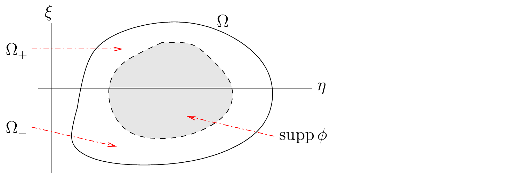

Solusi Kuat
Batas sumber. Bagian ini mengikat
wave_equ.tex baris 601-772 pada sumber beku.
Solusi Kuat Persamaan
Gelombang
Perhatikan persamaan diferensial parsial linear hiperbolik orde
dua
L ( η , ξ , D ) u = ∂ 2 u ∂ η ∂ ξ + A 1 , 0 ∂ u ∂ η + A 0 , 1 ∂ u ∂ ξ + A 0 , 0 u = 0 L(\eta,\xi,\mathrm{D})u = \frac{\displaystyle \partial^{2}{u}}{\displaystyle \partial \eta^{} \partial \xi^{}} + A_{1,0}
\frac{\partial{u}}{\partial \eta} + A_{0,1} \frac{\partial{u}}{\partial \xi} + A_{0,0} u = 0 (7.3.1)
Adjoin dari
L ( η , ξ , D ) L(\eta,\xi,\mathrm{D})
L * ( η , ξ , D ) ϕ = ∂ 2 ϕ ∂ η ∂ ξ − ∂ ∂ η ( A 1 , 0 ϕ ) − ∂ ∂ ξ ( A 0 , 1 ϕ ) + A 0 , 0 ϕ L^\ast(\eta,\xi,\mathrm{D})\phi = \frac{\displaystyle \partial^{2}{\phi}}{\displaystyle \partial \eta^{} \partial \xi^{}} -
\frac{\partial}{\partial \eta}{\left(A_{1,0}\phi\right)} -
\frac{\partial}{\partial \xi}{\left(A_{0,1}\phi\right)} + A_{0,0} \phi ϕ ∈ 𝒟 ( ℝ 2 ) \displaystyle\phi \in \mathcal{D}(\mathbb{R}^2)
Fungsi
u : Ω → ℝ u:\Omega \to \mathbb{R} u ∈ L l o c 1 ( Ω ) \displaystyle u\in L^1_{\mathrm{loc}}(\Omega) L ( η , ξ , D ) u = 0 L(\eta,\xi,\mathrm{D})u=0 Ω ⊂ ℝ 2 \displaystyle\Omega \subset \mathbb{R}^2
∫ Ω u ( η , ξ ) L * ( η , ξ , D ) ϕ ( η , ξ ) d η d ξ = 0 \int_\Omega u(\eta,\xi)\, L^\ast(\eta,\xi,\mathrm{D})\phi(\eta,\xi)
\,\mathrm{d}{\eta}\,\mathrm{d}{\xi} = 0 (7.3.2) ϕ ∈ 𝒟 ( Ω ) \phi \in \mathcal{D}(\Omega) u ∈ C 2 ( Ω ) \displaystyle u \in C^2(\Omega) 7.3.1 ),
sebagaimana dapat ditunjukkan menggunakan integrasi parsial.
Misalkan
Ω \Omega Γ \Gamma u u Γ \Gamma Ω \Omega ξ = 0 \xi=0 7.6 .

Kurva karakteristik Gamma membagi Omega
menjadi Omega_+, Omega_0, dan Omega_- untuk syarat transmisi solusi
kuat.
Kita memiliki
Ω = Ω + ∪ Ω 0 ∪ Ω − \Omega = \Omega_+ \cup \Omega_0 \cup \Omega_- Ω + = { ( η , ξ ) ∈ Ω : ξ > 0 } \displaystyle\Omega_+ = \left\{ (\eta,\xi) \in \Omega : \xi>0 \right\} Ω − = { ( η , ξ ) ∈ Ω : ξ < 0 } \displaystyle\Omega_- = \left\{ (\eta,\xi) \in \Omega : \xi<0 \right\} Ω 0 = { ( η , ξ ) ∈ Ω : ξ = 0 } \Omega_0 = \left\{ (\eta,\xi) \in \Omega : \xi=0 \right\}
Misalkan
u : Ω → ℝ u:\Omega \to \mathbb{R} 7.3.1 )
dalam pengertian klasik pada
Ω + \Omega_+ Ω − \Omega_- u u u u Ω 0 \Omega_0
Kita dapat mengasumsikan bahwa
u ( η , ξ ) = 0 u(\eta,\xi) = 0 ( η , ξ ) ∉ Ω (\eta,\xi) \not\in \Omega ϕ ∈ 𝒟 ( Ω ) \phi \in \mathcal{D}(\Omega) 𝒟 ( ℝ 2 ) \displaystyle\mathcal{D}(\mathbb{R}^2) Ω \Omega ℝ n \displaystyle\mathbb{R}^n
Dengan menggunakan integrasi parsial, untuk
ϕ ∈ 𝒟 ( Ω ) \phi \in \mathcal{D}(\Omega)
∫ Ω u ( η , ξ ) L * ( η , ξ , D ) ϕ ( η , ξ ) d η d ξ = ∫ Ω + u ( η , ξ ) L * ( η , ξ , D ) ϕ ( η , ξ ) d η d ξ + ∫ Ω − u ( η , ξ ) L * ( η , ξ , D ) ϕ ( η , ξ ) d η d ξ = ∫ 0 + ∞ ∫ − ∞ + ∞ u ( ∂ 2 ϕ ∂ η ∂ ξ − ∂ ∂ η ( A 1 , 0 ϕ ) − ∂ ∂ ξ ( A 0 , 1 ϕ ) + A 0 , 0 ϕ ) d η d ξ + ∫ − ∞ 0 ∫ − ∞ + ∞ u ( ∂ 2 ϕ ∂ η ∂ ξ − ∂ ∂ η ( A 1 , 0 ϕ ) − ∂ ∂ ξ ( A 0 , 1 ϕ ) + A 0 , 0 ϕ ) d η d ξ = ∫ 0 + ∞ ( u ∂ ϕ ∂ ξ | − ∞ + ∞ − ∫ − ∞ + ∞ ∂ u ∂ η ∂ ϕ ∂ ξ d η ) d ξ − ∫ 0 + ∞ ( u A 1 , 0 ϕ | − ∞ + ∞ − ∫ − ∞ + ∞ ∂ u ∂ η A 1 , 0 ϕ d η ) d ξ + ∫ 0 + ∞ ∫ − ∞ + ∞ u ( − ∂ ∂ ξ ( A 0 , 1 ϕ ) + A 0 , 0 ϕ ) d η d ξ \begin{aligned}
& \int_\Omega u(\eta,\xi)\, L^\ast(\eta,\xi,\mathrm{D})\phi(\eta,\xi)
\,\mathrm{d}{\eta}\,\mathrm{d}{\xi} \\
&= \int_{\Omega_+} u(\eta,\xi)\, L^\ast(\eta,\xi,\mathrm{D})\phi(\eta,\xi)
\,\mathrm{d}{\eta}\,\mathrm{d}{\xi}
+\int_{\Omega_-} u(\eta,\xi)\, L^\ast(\eta,\xi,\mathrm{D})\phi(\eta,\xi)
\,\mathrm{d}{\eta}\,\mathrm{d}{\xi} \\
&= \int_0^{+\infty} \int_{-\infty}^{+\infty} u \left(
\frac{\displaystyle \partial^{2}{\phi}}{\displaystyle \partial \eta^{} \partial \xi^{}} -\frac{\partial}{\partial \eta}{\left(A_{1,0}\phi\right)} -
\frac{\partial}{\partial \xi}{\left(A_{0,1}\phi\right)}
+ A_{0,0} \phi \right) \,\mathrm{d}{\eta}\,\mathrm{d}{\xi} \\
& \quad + \int_{-\infty}^0 \int_{-\infty}^{+\infty} u \left(
\frac{\displaystyle \partial^{2}{\phi}}{\displaystyle \partial \eta^{} \partial \xi^{}}-\frac{\partial}{\partial \eta}{\left(A_{1,0}\phi\right)} -
\frac{\partial}{\partial \xi}{\left(A_{0,1}\phi\right)} + A_{0,0}\phi \right) \,\mathrm{d}{\eta}\,\mathrm{d}{\xi} \\
&= \int_0^{+\infty} \left( u
\frac{\partial{\phi}}{\partial \xi}\bigg|_{-\infty}^{+\infty} - \int_{-\infty}^{+\infty}
\frac{\partial{u}}{\partial \eta}\frac{\partial{\phi}}{\partial \xi} \,\mathrm{d}{\eta} \right) \,\mathrm{d}{\xi}
- \int_0^{+\infty} \left( u A_{1,0} \phi\bigg|_{-\infty}^{+\infty}
- \int_{-\infty}^{+\infty} \frac{\partial{u}}{\partial \eta} A_{1,0} \phi
\,\mathrm{d}{\eta}\right) \,\mathrm{d}{\xi} \\
& \quad + \int_0^{+\infty} \int_{-\infty}^{+\infty}
u \left(-\frac{\partial}{\partial \xi}{\left(A_{0,1}\phi\right)}
+ A_{0,0} \phi \right) \,\mathrm{d}{\eta}\,\mathrm{d}{\xi}
\end{aligned}
+ ∫ − ∞ 0 ( u ∂ ϕ ∂ ξ | − ∞ + ∞ − ∫ − ∞ + ∞ ∂ u ∂ η ∂ ϕ ∂ ξ d η ) d ξ − ∫ − ∞ 0 ( u A 1 , 0 ϕ | − ∞ + ∞ − ∫ − ∞ + ∞ ∂ u ∂ η A 1 , 0 ϕ d η ) d ξ + ∫ − ∞ 0 ∫ − ∞ + ∞ u ( − ∂ ∂ ξ ( A 0 , 1 ϕ ) + A 0 , 0 ϕ ) d η d ξ = ∫ − ∞ + ∞ ∫ 0 + ∞ ( − ∂ u ∂ η ∂ ϕ ∂ ξ + ∂ u ∂ η A 1 , 0 ϕ − u ∂ ∂ ξ ( A 0 , 1 ϕ ) + u A 0 , 0 ϕ ) d ξ d η + ∫ − ∞ + ∞ ∫ − ∞ 0 ( − ∂ u ∂ η ∂ ϕ ∂ ξ + ∂ u ∂ η A 1 , 0 ϕ − u ∂ ∂ ξ ( A 0 , 1 ϕ ) + u A 0 , 0 ϕ ) d ξ d η = ∫ − ∞ + ∞ ( − ∂ u ∂ η ϕ | 0 + ∞ + ∫ 0 + ∞ ∂ 2 u ∂ η ∂ ξ ϕ d ξ ) d η − ∫ − ∞ + ∞ ( u A 0 , 1 ϕ | 0 + ∞ − ∫ 0 + ∞ ∂ u ∂ ξ A 0 , 1 ϕ d ξ ) d η + ∫ 0 + ∞ ∫ − ∞ + ∞ ( ∂ u ∂ η A 1 , 0 ϕ + u A 0 , 0 ϕ ) d η d ξ + ∫ − ∞ + ∞ ( − ∂ u ∂ η ϕ | − ∞ 0 + ∫ − ∞ 0 ∂ 2 u ∂ η ∂ ξ ϕ d ξ ) d η − ∫ − ∞ + ∞ ( u A 0 , 1 ϕ | − ∞ 0 − ∫ − ∞ 0 ∂ u ∂ ξ A 0 , 1 ϕ d ξ ) d η + ∫ − ∞ 0 ∫ − ∞ + ∞ ( ∂ u ∂ η A 1 , 0 ϕ + u A 0 , 0 ϕ ) d η d ξ \begin{aligned}
& \quad + \int_{-\infty}^0 \left( u
\frac{\partial{\phi}}{\partial \xi}\bigg|_{-\infty}^{+\infty} - \int_{-\infty}^{+\infty}
\frac{\partial{u}}{\partial \eta}\frac{\partial{\phi}}{\partial \xi} \,\mathrm{d}{\eta} \right) \,\mathrm{d}{\xi}
- \int_{-\infty}^0 \left( u A_{1,0} \phi\bigg|_{-\infty}^{+\infty}
- \int_{-\infty}^{+\infty} \frac{\partial{u}}{\partial \eta} A_{1,0} \phi
\,\mathrm{d}{\eta}\right) \,\mathrm{d}{\xi} \\
& \quad + \int_{-\infty}^0 \int_{-\infty}^{+\infty}
u \left(-\frac{\partial}{\partial \xi}{\left(A_{0,1}\phi\right)}
+ A_{0,0} \phi \right) \,\mathrm{d}{\eta}\,\mathrm{d}{\xi} \\
&= \int_{-\infty}^{+\infty} \int_0^{+\infty} \left(
- \frac{\partial{u}}{\partial \eta}\frac{\partial{\phi}}{\partial \xi} + \frac{\partial{u}}{\partial \eta} A_{1,0} \phi
- u \frac{\partial}{\partial \xi}{\left(A_{0,1}\phi\right)}
+ u A_{0,0} \phi \right) \,\mathrm{d}{\xi}\,\mathrm{d}{\eta} \\
&\quad + \int_{-\infty}^{+\infty} \int_{-\infty}^0 \left(
-\frac{\partial{u}}{\partial \eta}\frac{\partial{\phi}}{\partial \xi} + \frac{\partial{u}}{\partial \eta} A_{1,0} \phi
- u \frac{\partial}{\partial \xi}{\left(A_{0,1}\phi\right)} + u A_{0,0} \phi \right)
\,\mathrm{d}{\xi}\,\mathrm{d}{\eta} \\
&= \int_{-\infty}^{+\infty} \left( -\frac{\partial{u}}{\partial \eta}
\phi\bigg|_0^{+\infty} + \int_0^{+\infty}
\frac{\displaystyle \partial^{2}{u}}{\displaystyle \partial \eta^{} \partial \xi^{}} \phi \,\mathrm{d}{\xi} \right) \,\mathrm{d}{\eta}
- \int_{-\infty}^{+\infty} \left( u A_{0,1} \phi\bigg|_0^{+\infty}
- \int_0^{+\infty} \frac{\partial{u}}{\partial \xi} A_{0,1} \phi \,\mathrm{d}{\xi}\right) \,\mathrm{d}{\eta} \\
&\quad + \int_0^{+\infty} \int_{-\infty}^{+\infty}
\left(\frac{\partial{u}}{\partial \eta} A_{1,0}\phi + u A_{0,0} \phi \right) \,\mathrm{d}{\eta}\,\mathrm{d}{\xi} \\
&\quad + \int_{-\infty}^{+\infty} \left( -\frac{\partial{u}}{\partial \eta}
\phi\bigg|_{-\infty}^0 + \int_{-\infty}^0
\frac{\displaystyle \partial^{2}{u}}{\displaystyle \partial \eta^{} \partial \xi^{}} \phi \,\mathrm{d}{\xi} \right) \,\mathrm{d}{\eta}
- \int_{-\infty}^{+\infty} \left( u A_{0,1} \phi\bigg|_{-\infty}^0
- \int_{-\infty}^0 \frac{\partial{u}}{\partial \xi} A_{0,1} \phi
\,\mathrm{d}{\xi}\right) \,\mathrm{d}{\eta} \\
&\quad + \int_{-\infty}^0 \int_{-\infty}^{+\infty}
\left(\frac{\partial{u}}{\partial \eta} A_{1,0}\phi + u A_{0,0} \phi \right) \,\mathrm{d}{\eta}\,\mathrm{d}{\xi}
\end{aligned}
= ∫ Ω + ( L ( η , ξ , D ) u ( η , ξ ) ) ϕ ( η , ξ ) d η d ξ + ∫ Ω − ( L ( η , ξ , D ) u ( η , ξ ) ) ϕ ( η , ξ ) d η d ξ + ∫ Ω 0 ( u + ( η , 0 ) A 0 , 1 ( η , 0 ) ϕ ( η , 0 ) + ∂ u + ∂ η ( η , 0 ) ϕ ( η , 0 ) ) d η − ∫ Ω 0 ( u − ( η , 0 ) A 0 , 1 ( η , 0 ) ϕ ( η , 0 ) + ∂ u − ∂ η ( η , 0 ) ϕ ( η , 0 ) ) d η = ∫ Ω 0 ( u + ( η , 0 ) − u − ( η , 0 ) ) A 0 , 1 ( η , 0 ) ϕ ( η , 0 ) d η + ∫ Ω 0 ( ∂ u + ∂ η ( η , 0 ) − ∂ u − ∂ η ( η , 0 ) ) ϕ ( η , 0 ) d η \begin{aligned}
&= \int_{\Omega_+} \left( L(\eta,\xi,\mathrm{D}) u(\eta,\xi)\right)\phi(\eta,\xi)
\,\mathrm{d}{\eta}\,\mathrm{d}{\xi}
+ \int_{\Omega_-} \left(L(\eta,\xi,\mathrm{D}) u(\eta,\xi)\right)\phi(\eta,\xi)
\,\mathrm{d}{\eta}\,\mathrm{d}{\xi} \\
&\quad +\int_{\Omega_0} \left( u_+(\eta,0) A_{0,1}(\eta,0) \phi(\eta,0) +
\frac{\partial{u_+}}{\partial \eta}(\eta,0)\phi(\eta,0) \right) \,\mathrm{d}{\eta} \\
&\quad - \int_{\Omega_0} \left( u_-(\eta,0) A_{0,1}(\eta,0) \phi(\eta,0) +
\frac{\partial{u_-}}{\partial \eta}(\eta,0)\phi(\eta,0) \right) \,\mathrm{d}{\eta} \\
&=\int_{\Omega_0} \left(u_+(\eta,0) -u_-(\eta,0)\right)
A_{0,1}(\eta,0) \phi(\eta,0)\,\mathrm{d}{\eta}
+\int_{\Omega_0} \left( \frac{\partial{u_+}}{\partial \eta}(\eta,0)
- \frac{\partial{u_-}}{\partial \eta}(\eta,0) \right)\phi(\eta,0) \,\mathrm{d}{\eta}
\end{aligned} u ± ( η , 0 ) = lim ξ → 0 ± u ( η , ξ ) \displaystyle u_\pm(\eta,0) = \lim_{\xi\rightarrow 0^\pm} u(\eta,\xi) ∂ u ± ∂ η ( η , 0 ) = lim ξ → 0 ± ∂ u ∂ η ( η , ξ ) \displaystyle\frac{\partial{u_\pm}}{\partial \eta}(\eta,0) =
\lim_{\xi\rightarrow 0^\pm} \frac{\partial{u}}{\partial \eta}(\eta,\xi)
Agar
∫ Ω u ( η , ξ ) L * ( η , ξ , D ) ϕ ( η , ξ ) d η d ξ = 0 \displaystyle\int_\Omega u(\eta,\xi)\, L^\ast(\eta,\xi,\mathrm{D})\phi(\eta,\xi)
\,\mathrm{d}{\eta}\,\mathrm{d}{\xi} =0 ϕ ∈ 𝒟 ( Ω ) \phi \in \mathcal{D}(\Omega)
∫ Ω 0 ( u + ( η , 0 ) − u − ( η , 0 ) ) A 0 , 1 ( η , 0 ) ϕ ( η , 0 ) d η + ∫ Ω 0 ( ∂ u + ∂ η ( η , 0 ) − ∂ u − ∂ η ( η , 0 ) ) ϕ ( η , 0 ) d η = 0 \int_{\Omega_0} \big(u_+(\eta,0) - u_-(\eta,0)\big) A_{0,1}(\eta,0)
\phi(\eta,0) \,\mathrm{d}{\eta} +\int_{\Omega_0} \left( \frac{\partial{u_+}}{\partial \eta}(\eta,0)
- \frac{\partial{u_-}}{\partial \eta}(\eta,0)\right) \phi(\eta,0) \,\mathrm{d}{\eta} = 0 ϕ ∈ 𝒟 ( Ω ) \phi \in \mathcal{D}(\Omega) syarat transmisi
Jika kita meninjau persamaan gelombang
L ( η , ξ , D ) u = ∂ 2 u ∂ η ∂ ξ = 0 \displaystyle L(\eta,\xi,\mathrm{D})u = \frac{\displaystyle \partial^{2}{u}}{\displaystyle \partial \eta^{} \partial \xi^{}} = 0 u u
∫ Ω 0 ( ∂ u + ∂ η ( η , 0 ) − ∂ u − ∂ η ( η , 0 ) ) ϕ ( η , 0 ) d η = 0 \int_{\Omega_0} \left( \frac{\partial{u_+}}{\partial \eta}(\eta,0)
- \frac{\partial{u_-}}{\partial \eta}(\eta,0)\right) \phi(\eta,0) \,\mathrm{d}{\eta} = 0 (7.3.3) ϕ ∈ 𝒟 ( Ω ) \displaystyle\phi\in \mathcal{D}(\Omega) ϕ ∈ 𝒟 ( Ω ) \phi \in \mathcal{D}(\Omega)
∂ u + ∂ η ( η , 0 ) − ∂ u − ∂ η ( η , 0 ) = 0 \frac{\partial{u_+}}{\partial \eta}(\eta,0) - \frac{\partial{u_-}}{\partial \eta}(\eta,0) = 0 η ∈ I Ω \eta \in I_\Omega I Ω = { η ∈ ℝ : ( η , 0 ) ∈ Ω } \displaystyle I_\Omega=\{\eta\in\mathbb{R}:(\eta,0)\in\Omega\} u u ∂ u ∂ η \displaystyle\frac{\partial{u}}{\partial \eta} η \eta u + ( η , 0 ) − u − ( η , 0 ) \displaystyle u_+(\eta,0) - u_-(\eta,0) I Ω I_\Omega
Contoh.
Pada Contoh 7.1.3 ,
jika fungsi-fungsi
f f g g A A B B C ∞ \displaystyle C^\infty u u x = c t x = ct x = − c t + L x = -ct +L x = 0 x=0 x = L x=L 7.1.13 )
diperoleh
lim 𝒂 → 𝒅 𝒂 ∈ R 3 u ( 𝒂 ) = u ( 𝒅 ) + B ( 0 ) − f ( L ) \displaystyle\lim_{\substack{\boldsymbol{a} \to \boldsymbol{d}\\ \boldsymbol{a} \in R_3}} u(\boldsymbol{a}) = u(\boldsymbol{d})+ B(0) - f(L) R 3 R_3 7.4 .
Atribusi dan hak. Karya sumber oleh Benoit Dionne
dilisensikan berdasarkan Creative
Commons Attribution-NonCommercial-ShareAlike 4.0 International .
Terjemahan dan perubahan yang dicatat menggunakan lisensi komponen yang
sama. Produksi terjemahan dan edisi dibantu OpenAI Codex gpt-5.6-sol,
Ultra; semua kredit penulis dan kontributor manusia tetap dipertahankan.
Ini bukan terbitan atau dukungan resmi Benoit Dionne maupun University
of Ottawa.